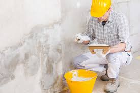
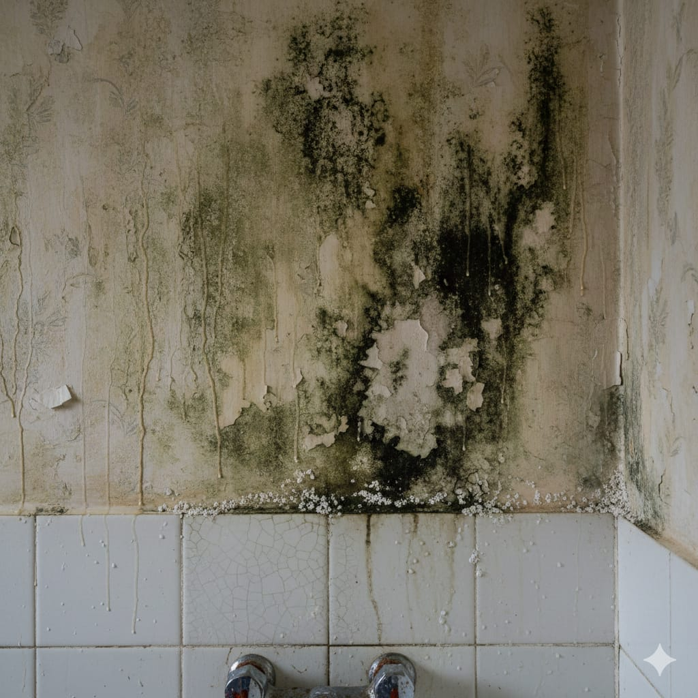
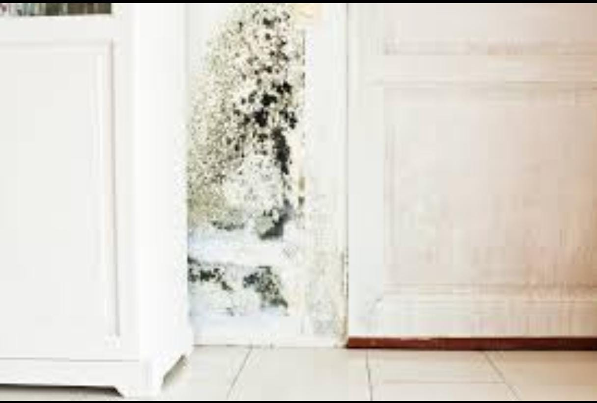
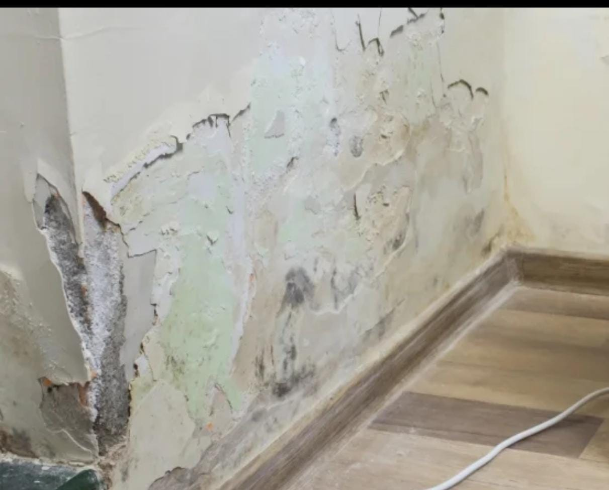
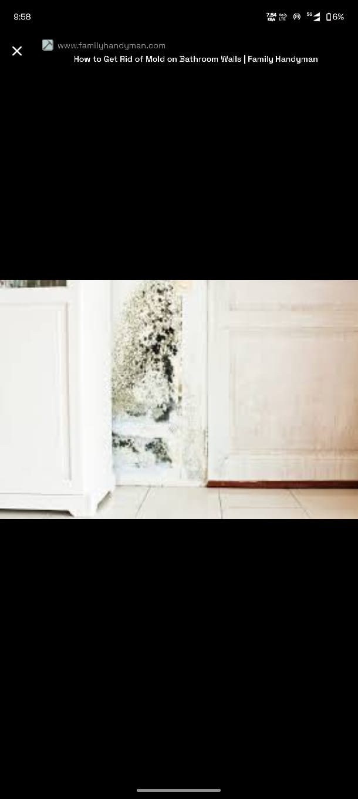

Internal Wall Dampness Treatment
Permanent solution for damp patches, peeling paint, and fungal growth.
Why Internal Wall Dampness Treatment Is Important
Internal wall dampness weakens plaster, damages paint, and creates unhealthy living conditions. Early treatment prevents long-term structural and hygiene issues.
Materials Used
• Damp-proof chemical solutions
• Cementitious waterproof coatings
• Anti-fungal treatments
• Crack fillers
Our 5-Step Dampness Treatment Process
Step 1: Dampness source inspection.
Step 2: Surface cleaning and preparation.
Step 3: Chemical treatment application.
Step 4: Waterproof coating application.
Step 5: Drying and final inspection.
Project Image Gallery





Frequently Asked Questions
1. What causes wall dampness?
Seepage and moisture retention.
Seepage and moisture retention.
2. Is repainting enough?
No, treatment is required.
No, treatment is required.
3. Time required?
2–3 days.
2–3 days.
4. Mold prevention?
Yes.
Yes.
5. Long lasting?
Yes.
Yes.